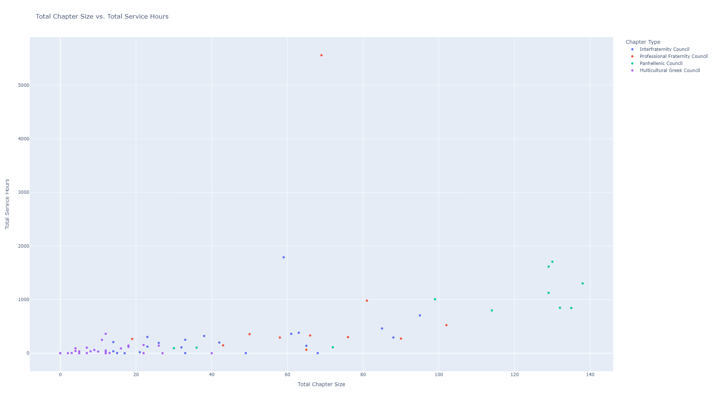
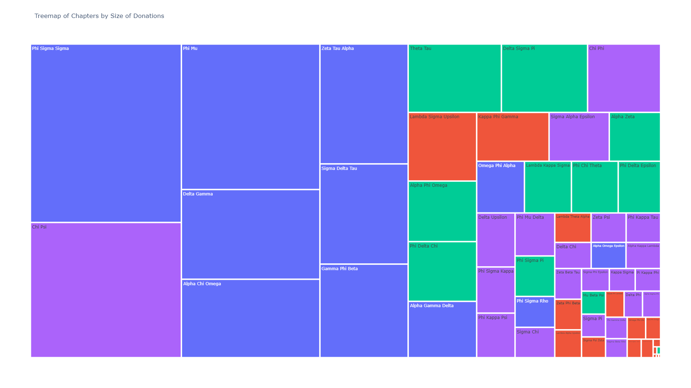

This data is ranked based on 4 criteria:
I took the mean of all 4 categories and plotted them and colored each chapter by its type. I understand that there is some level of double counting happening so I made a judgement call. There is always room for the ranking to change for the next semester.
This is the reason why I use Charitable Donations Per Member and not Total Charitable Donations. 10 member chapters simply cannot compete with chapters 10x their size.
The top 7 frats out of 73 total represent 55.8% of donations
| Chapter | Charitable Donations |
|---|---|
| Phi Sigma Sigma | $49,246.00 |
| Chi Psi | $37,297.33 |
| Phi Mu | $36,844.26 |
| Delta Gamma | $22,726.00 |
| Alpha Chi Omega | $19,841.93 |
| Zeta Tau Alpha | $19,342.62 |
| Sigma Delta Tau | $16,164.73 |
These 7 contributed $201,462.87 out of a total of $361,269.48
| Rank | Chapter | Chapter Type | Total Chapter GPA | Average Hours Per Member | Annual Report Score | Charitable Donations Per Member | Total |
|---|
| Chapter | Total Chapter Size | New Member Class Size | Total Chapter GPA | New Member GPA | Total Service Hours | Average Hours Per Member | Charitable Donations | Charitable Donations Per Member | Annual Report Score | Star Ranking | Chapter Type | Semester |
|---|
By Ibrahim Mudassar